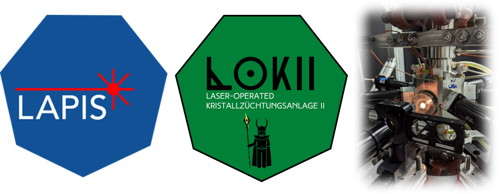

Welcome to the High-Pressure Laser Floating Zone Lab Documentation!
Brief overview
The high-pressure laser floating zone furnaces enable bulk single crystal growth of a wide variety of volatile and metastable phases, at pressures up to 1,000 bar using N\(_2\), Ar, and O\(_2\) gas environments. For more details about the furnace capabilities, see the publications for the furnace designs, first-generation and second-generation (TBD).
About this website
This website provides information relevant to user orientation, serves as a quick reference guide for returning users, and serves as a knowledgebase for maintenance information and known issues.